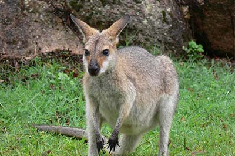

.png)
Wonders of Australia
No visit to Australia is complete without exploring the magnificent sights and natural wonders on offer. Australia is truly unique with breathtakingly beautiful beaches, sandy deserts and stunning tropical rainforests. Did you know Australia is also the driest inhabited continent of the world and is the only country in the world that covers an entire continent? It is one of the largest countries on Earth.
Australia is divided into six states: South Australia, Western Australia, New South Wales, Queensland, Victoria and Tasmania, and two self-governing territories: the Northern Territory and the Australian Capital Territory (ACT). The biggest cities in Australia are Sydney and Melbourne. All our cities are located at the coast or close to the coast. However, our Capital city is Canberra and it is located in the ACT, inland in the state of NSW.
"Kangaroo" by Flying Cloud is licensed under CC BY 2.0 
 .
.
Due to Australia's remote location, there are many animal species that occur here and nowhere else in the world, such as the platypus, kangaroo, echidna, and koala.